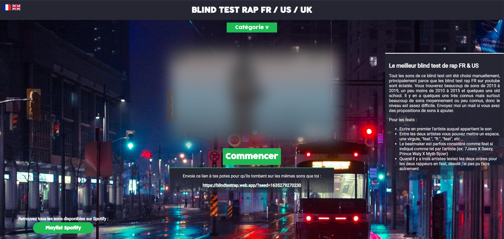

Blindtestrap
Blindtestrap is a website allowing you to play blindtest with french rap songs. It is special in a way that the song are chosed by a human (me), and not a database. Moreover, you can also guess with the video clip, as they are visible but blurred. That was intended in order to reward rap geeks like me.
There is not a lot more to say about this, It was done when I wasn't really good at web development, so I'll probably do a rework soon. I still reuploaded it here, so you can play all you want.

Blindtestrap home view